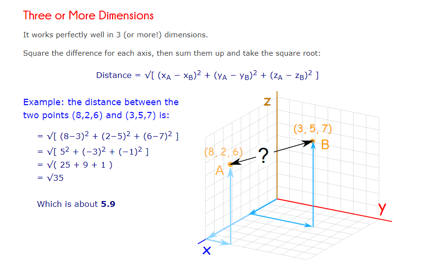
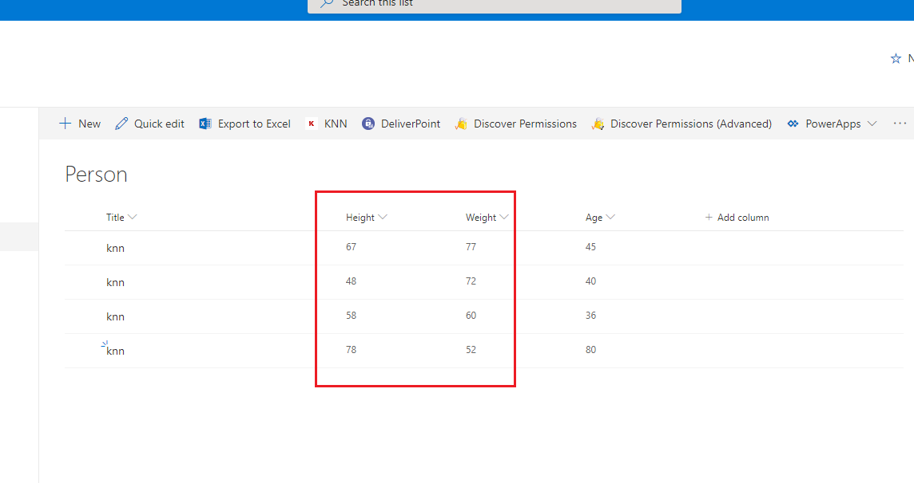
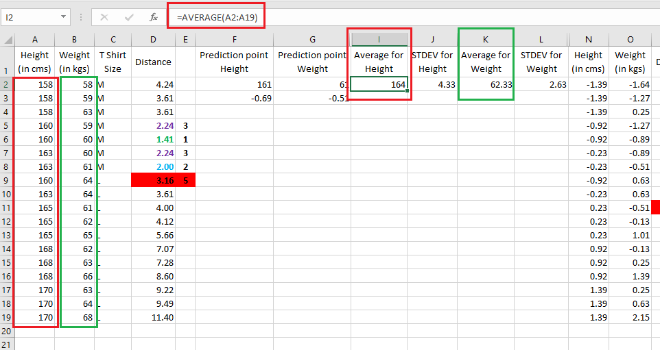
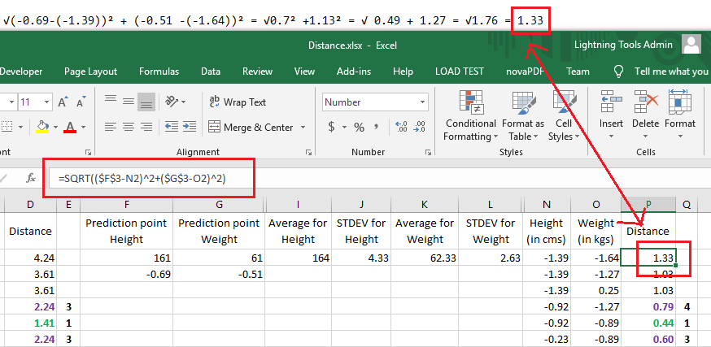

KNN TensorFlow.js SharePoint Framework (SPFx) extension description
GitHub Repository: https://github.com/Ashot72/knn-tensorflowjs-spfx-extension
Video link: https://vimeo.com/357600325
How to run application: https://ashot72.github.io/knn-tensorflowjs-spfx-extension/
Please read "How to run application" first.
KNN (k-nearest-neighbor algorithm, machine learning algorithm), is an approach to data classification that estimates how likely a data point is to be a member
of one group or the other depending on what group the data points nearest to it are in.
KNN is not trained. We have to re-run the entire algorithm every single time that we want to make a prediction, because we have to recalculate all those distances.
We have to sort them all, take the top K records (will discuss all). So, it is one of the most time and space consuming classification method. Feature reduction
can reduce these problems.
With other algorithms, we have a model that can be trained then use it to make a prediction very quickly.
Another difference between KNN and other algorithms is that it is really easy to understand KNN. It just makes sense. There are lot more math going on with other
algorithms and sometimes that math is not going to be a clear. For example, with gradient descent algorithm you are involved in calculus, should understand what mean square error,
learning rate, coefficient of determination etc. are which is not the case with KNN.
We are going to implement KNN with TensorFlow.js https://www.tensorflow.org/js
TensorFlow.js is an open source library that you can use to define, train, and run machine learning models entirely in browser, or in Node.js using JavaScript and a high-level API.
As our app is a SharePoint (SPFx) extension we are going to run it in a browser.
Everything that we are going to be using in tensor flow is very similar to a very popular Python library called NumPy in the machine learning world. TensorFlow is built to have a very similar
API to NumPy.

Figure 1
If go to TensorFlow.js API page https://js.tensorflow.org/api/latest/ you will see tremendous amount of objects, functions and properties that belong to this library.
There are 2 sets of APIs. First one is low level linear algebra API that we are going to use in our app and the second one is higher level API that makes pretty easy to make some
more advanced machine learning algorithms.
Tensors are the core data structure of TensorFlow.js. They are a generalization of vectors and matrices to potentially higher dimensions.
Figure 2
Here are one, two and three-dimensional tensors.

Figure 3
I printed the 1D tensor, its size and shape.
You can see the size of this tensor is 4.
With shape we are essentially talking about a property of a tensor that describes how many elements there are in each individual dimension.
Our 1D tensor's shape is [4].
Figure 4
The size of the 2D tensor is 12 and the shape is [3, 4] as there are 3 rows and 4 columns.
Figure 5
The size of 3D tensor is 3, and the shape is [1,1,3].
We use tensors to do basic arithmetic operations like adding, subtracting, dividing and so on.
Figure 6
Here we add first tensor to second one. We take each value inside of first data tensor and add each value from second tensor. This is called element wise operation.
We look at identical indices in both tensors and then do some operation on those two individual indices together, then take the result of that and put it into a new output tensor.

Figure 7
Addition, subtraction, division and multiplication element wise operations with tensors.
Figure 8
Here is element wise operation 'addition' on 2D tensors.
There are other element wise operations such as less than greater than equal etc., logical comparison element wise operations and so on.
Figure 9
If the tensors' shapes do not match then we cannot do element wise operations. First tensor's shape of [4] and the other one's [3].
The second tensor does not have a corresponding value for the value 4 of the first tensor, so the result is undefined.
But there are some situations that we are allowed to do element wise operations even the shapes of two tensors do not match.
Figure 10
You can see that first tensor's shape is 3, the second tensor's shape is 1 and we do element wise operation 'addition' though their shapes do not match.
Element wise operations with two tensors that have different shapes is the process referred to as broadcasting.
In order to know if broadcasting works, we take shape of both tensors from right to left and if shapes are equal to each other,
or one shape has a value of 1 (or no shape for the second tensor) then we are allowed to do broadcasting operation.

Figure 11
The shape of the first tensor is 3 and the second one is 1. Starting form right hand side and comparing to left (does not make sense in this case as both have
single values). If they are identical or one of them is equal to 1 then we are allowed to do broadcasting operations. In this case two shape values are not
equal but the second one has a value of one. So, broadcasting is allowed.

Figure 12
Here is another example. Starting form right hand side and comparing to left. 3 is equal to 1, no but 1 is equal to 1 yes, so we are allowed to broadcasting so far.
We are moving to the next index, 2 is equal to 2, yes, they are, and we are allowed to do broadcasting.

Figure 13
In this case we received a broadcasting error as 3 is not equal to 2.
Figure 14
Here is a geometry of some examples visualized form a python book I was learning. It is explained on NumPy arrays but it works for TensorFlow as well.
Figure 15
Testing third example with TensorFlow.js We got the same result with broadcasting.
Figure 16
Let's see how to contaminate two tensors. I formatted the output for you to see how it was concatenated. You might expect 2 rows but the output shape
is [4,3], four rows and three columns not [2, 6], 2 rows and 6 columns. The concatenate method has a second argument that you can use to specify which way your tensors will be joined together.

Figure 17
We can pass in the second integer argument to concat function either 0 or 1, because we have a two-dimensional tensor that we are with. The default argument for this is 0. We got the same
result that had before.

Figure 18
When we put in 1, we get a different result. 0 or 1 refer to the axis of concatenation. Number 0 means concatenate along the columns,1 along the rows.
Figure 19
Let's look at sum function. By default, if we call sum with no arguments it is going to look at every value inside of the tensor and sum them all together and the result is 45.
We can also sum along an axis very similar to how we were doing contamination along an axis. With axis 0 we summed along each these rows [12, 15, 18]
and with 1 along the columns [6, 15, 24].

Figure 20
Min function finding overall min value and values along the axis.

Figure 21
When we call the sum function it reduces the dimension of the output tensor. First tensor's dimension is [3, 3] and after the sum it is [3]. We went from
2D tensor to 1D. To keep dimension we call first.sum(1, true) with true argument. The second dimension is referred to as the keep dimension argument.
When we pass in a value of true and when the sum function runs, it is not going to reduce the dimensions of that input tensor. The dimension is [3, 1].
We can get the same result with expandDims which increase the dimension of your tensor by 1.
You may recall that we defined KNN steps on how to run the application page
(https://ashot72.github.io/knn-tensorflowjs-spfx-extension/) and the third step is
Step 3 Calculate the distance between the predicted point and the existing points.
Let's see how to calculate the distance between two points https://www.mathsisfun.com/algebra/distance-2-points.html
Figure 22
Here is a quick and an easy explanation of the distance calculation.

Figure 23
Here is the distance calculation formula.
Figure 24
These are examples of distance calculations.

Figure 25
The formula works perfectly in 3 or more dimensions.
Now, it is time to explore our SharePoint (SPFx) extension.
Figure 26
I am going to run the extension. We selected three features bmi, glucose and insulin and running them against the testing set.
Figure 27
In our case selected features are bmi, glucose and insulin and datapoint is a testing set data. I also highlighted TensorFlow chain operations that ware going to look into.
Figure 28
You see the features tensor where the first column is bmi values, glucose, insulin respectively. dataPoint tensor is a current testing set tensor.
Figure 29
We are going to subtract our datapoint features.sub(datapoint) and we can make validation to make sure that those values actually make sense.
114 minus 178 equals -64. Actually, we started calculating the distance between features tensor and datapoint tensor and found the difference between every single
different data point.
Figure 30
What we need to do now is taking care of squaring those differences.
Figure 31
-3 squared is 9 and -64 squared is 4096. All those values have been squared successfully.
Figure 32
Now, we need to add them together across each row so we pass argument 1 to sum function; sum(1).
Figure 33
57.760006 plus 1 plus 4096 is equal to 4154.7597656. Everything is going well so far.
Figure 34
We need to take square root on each element at this point.
Figure 35
Square root of 4154.759 is 64.45.
We finished the distance calculation.
Step 1 Load the data
Step 2 Initialize K to your chosen number of neighbors
Step 3 Calculate the distance between the predicted point and the existing points
Basically, we went through all those three steps.
Step 4 Sort the ordered collection of distances from smallest to largest (in ascending order) by the distances.
Next one is the sorting by the distances.
Figure 36
Before sorting we concatenate features and labels to make sure that we maintain a relationship between them. In other words, indices on both our distances and labels should be lined up.
Before concatenation we call exandDims(1) function to expand the dimension from 1D to 2D, from [691] to [691, 1].
Figure 37
As you can see without expandDims we cannot concatenate as these things do not match. With exapndDims we have 691 rows and 1 column [691, 1]
which is going to match up very nicely with our labels 691 rows and 1 column [691, 1].
Figure 38
After the concatenation the shape became [691, 2].
Now, it is time to sort the tensor, but there is an issue. Tensors cannot be sorted. There is no sort function in TensorFlow.js API.
There is no function in TensorFlow library that is going to look at all the values inside of a tensor.
Figure 39
For that reason we call arraySync() function to convert tensor data as a nested JavaScript array. After that we can apply JavaScript's vanilla sort function to sort data inside the nested array.
Figure 40
We just sorted data by feature and finished with sorting.
Step 6 Get the labels of the selected K entries.
Figure 41
We take top K records using slice. This is the native JavaScript slice method not the TensorFlow's version of slice because now we are working with a normal JavaScript array.
In our case K is 3 so we have three rows.
Step 7 (regression) If regression, return the mean of the K labels.
Step 7 (classification) if classification, return the frequent class of the K labels.
Figure 42
After the sorting we have 2 cases, Classification and Regression. In case of classification (our diabetics case we are discussing now) we return the frequent class. Imagine that instead of three records,
three zeroes (Figure 5) we return 7 records with 0,1,1,0,0,1,1. The returned classification value is 1 in this case as we have four 1s and three 0s. The most frequent one is 1.
Figure 43
This part of Lodash code is taking the most frequent one by returning a single integer value.
In Regression case we calculate the mean (average) of top K labels. If the sorted labels are 10, 45, 65 then the mean is 10 plus 45 plus 65 divided by 3 which is 120 divided by 3 is equal 40.
.
Figure 44
This part is taking care of Regression calculation.
Figure 45
Let's run the analysis with Min-max Normalization this time.
Figure 46
The goal of normalization is to make every datapoint have the same scale between 0 and 1 so each feature is equally important.
Figure 47
Min-Max normalization formula is (value - min) / (max - min) which is implemented by means of TensorFlow's min, max and sub functions.
I wonder if we really get the right results with TensorFlow's and plot accordingly.

Figure 48
I created a Person list with four records specifying a person's Height, Weight and Age.

Figure 49
I plot Height against Wight with Data Transform None option and can see that each height corresponds to its weight.
Figure 50
This one is with Min-Max option ranging from 0 to 1.
Now calculating with Min-Max formula.
Figure 51
Min of Height is 48 and Max is 78. Min of Weight is 52 and Max is 77.
Figure 52
Min-Max values are in right positions.
Figure 53
In House Data scenario Z-Score Standardization was the option. With Standardization the values are going to range from negative one standard deviation to one standard deviation
with the average value failing out around zero.
Figure 54
Here are features and datapoint tensor values after standardization.
Figure 55
I plot Height and Weight with Z-Score standardization option.
Figure 56
It is the standardization formula where μ is the mean value of the feature and σ is the standard deviation of the feature.
Let's figure out what all this mean.
I am back to mathisfun.com https://www.mathsisfun.com/data/standard-deviation.html
Figure 57
You see the steps to calculate mean and the standard deviation.
Figure 58
In this example the mean (average) of all dogs is 394. Calculating mean is the first step.
Figure 59
Calculate the variance.
Figure 60
Standard deviation is 147. We mostly consider standard deviation instead of variance, as the variance is no longer in the same unit of
measurement as the original data. Taking the root of the variance means the standard deviation is restored to the original unit of measure and
therefore, much easier to measure.
Figure 61
We use tf.moments() function along the axis 0 to calculates the mean and variance.
Figure 62
Then we calculate Z-Score standardization with tensors based on its formula.
Figure 63
These are the points of Height against Weight.
Figure 64
The points after Z-Score standardization. Let's make sure that we got the right values after Z-Sore standardization with TensorFlow's.
Figure 65
First, we should calculate both mean and variance then standard division of both Height and Weight then apply Z-Score standardization formula.
Figure 66
I calculated the mean, variance, standard deviation then Z-Score standardization and could see that the results correspond to the results on a diagram calculated with the TensorFlows function.
We already stated that when we calculate the distance between two features the feature with the larger scale will completely dominate the other. For that reason, we should normalize or standardize.
Let's see it in action.
Figure 67
Suppose we have height, weight and T-shirt size of some customers and we need to predict the T-shirt size of a customer given only the height and weight information.
So, Height and Weight are features (actually we are not going to predict the age, we just explore Z-Score standardization in here). By clicking D2 cell and activating it you will see
the distance formula in Excel. It calculates the distance between the Prediction point Height and Height, Prediction point Weight and Weight.
Figure 68
This is the distance formula we already discussed.
Figure 69
Calculating the distance for the first row and comparing it. This is the result calculated in our Excel file.
Figure 70
We have all distances and can see that 1.41 is the lowest one the fifth one is 3.16 for the height 160 and width 64.

Figure 71
We calculate the mean (average) both for height and weight.
Figure 72
Then we calculate the Standard Deviation both for height and weight.
Figure 73
We calculate Z-Score standardization.
Figure 74
We already discussed the Z-Score standardization formula.
Figure 75
Our prediction points should be on the same scale.
Figure 76
We calculated a new scaled prediction height and weight.

Figure 77
We calculate a new distance based on the scaled prediction points.

Figure 78
Calculating the distance of the first height to make sure the formula functions properly.
Figure 79
As a result, you can see that after the standardization, 5th closet value got changed as height was dominating earlier before standardization. Hence, it is important
to standardize predictions before running K-nearest neighbor algorithm.
Figure 80
When you run the app, you will see a warning related to WebGL saying WebGL is not supported on this device.
TensorFlow.js id a framework that enables us to run a deep learning model in the browser easily and efficiently. Tensor manipulation requires a huge amount of
computation power. The defacto standard way for that is currently using accelerator such as GPU. GPU provides us with a large amount of parallelism so that we can
distribute the tensor calculation in the multiple threads. TensorFlow.js make it possible even in the web browser by using WebGL. WebGL is a standard API to use GPU
from web browser mainly for graphical processing. Thanks to WebGL, we can see the rich web contents smoothly. WebGL backend is 100x faster than the vanilla CPU
backend.
Figure 81
Go to Chrome settings and search accel and then enable hardware acceleration. After that the WebGL warning will disappear as your browser will start using hardware acceleration.

Figure 82
The caveat when using WebGL backend is the need for explicit memory management. WebGLTextures, which is where Tensor data is
ultimately stored, are not automatically garbage collected by the browser. It is very common to chain multiple operations together in an
application. Holding a reference to all of the intermediate variables to dispose them can reduce code readability. To solve the problem,
TensorFlow.js team provides a tf.tidy() method which cleans up all tf.Tensor s that are not returned by a function after execution it, similar
to the way local variables are cleaned up when a function is executed.